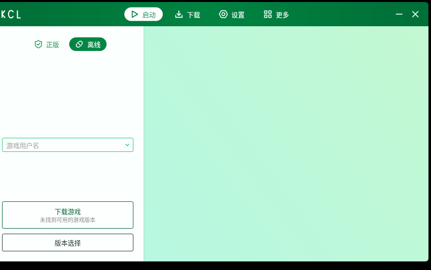
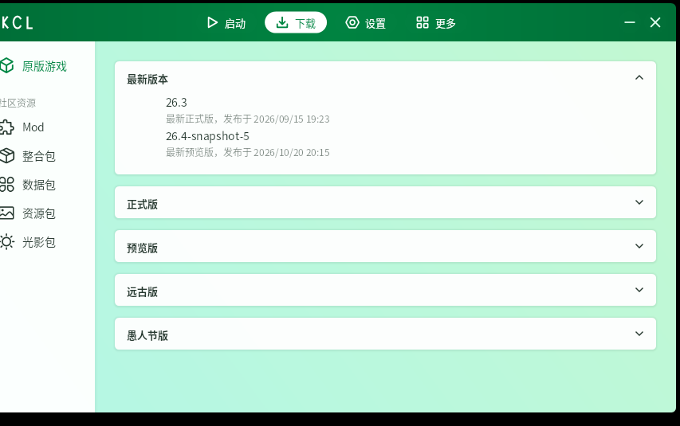
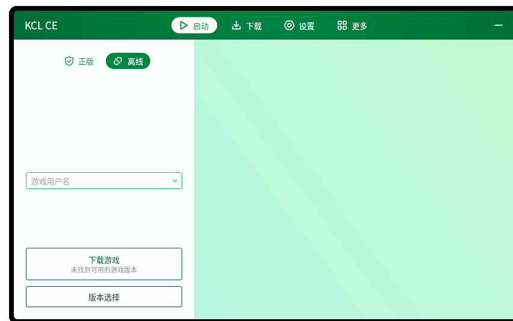
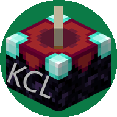

PLAIN CRAFT LAUNCHER · 第三方改造 · MIT
Windows 用 KCL2 或 KCL CE，Android 用 KCL Mobile。版本下载、加载器安装、整合包、微软正版登录、局域网联机与低配渲染优化，三端同源同更新源。
Three builds
同一个 KCL 品牌，三种形态。下面按钮直达最新构建，不用再翻 Release 列表。
基于 PCL2 的单文件启动器。版本下载、Forge/NeoForge/Fabric/OptiFine、整合包、正版登录、联机房间都在里面，解压即用。
Capability matrix
不写“全面领先”这种空话，能做什么、做不到什么，直接摊开。
| 能力 | KCL2（Windows） | KCL CE（Windows） | KCL Mobile（Android） |
|---|---|---|---|
| 版本下载 | 官方源 + BMCLAPI | 官方源 + BMCLAPI | 官方源 + BMCLAPI |
| 加载器 | Forge / NeoForge / Fabric / OptiFine / Quilt | 同 KCL2 | Fabric / Quilt / Forge（按版本） |
| 微软正版登录 | 支持 | 支持 | 支持 |
| 联机 | EasyTier 房间 + 邀请码 | 走社区大厅 | 陶瓦 / 社区大厅 |
| 低配渲染 | 软件渲染回退 + 崩溃自愈 | 同 KCL2 | KCL Engine 档位调度 |
| 更新源 | continuous | continuous | latest_version_md.json |
| 形态 | 单文件 EXE | EXE / 解压包 | APK（armeabi-v7a 起） |
Changelog
公告同时会被启动器拉取，软件内看到的和这里一致。
正在读取公告…
Screens
截图来自实际构建，不是设计稿。



